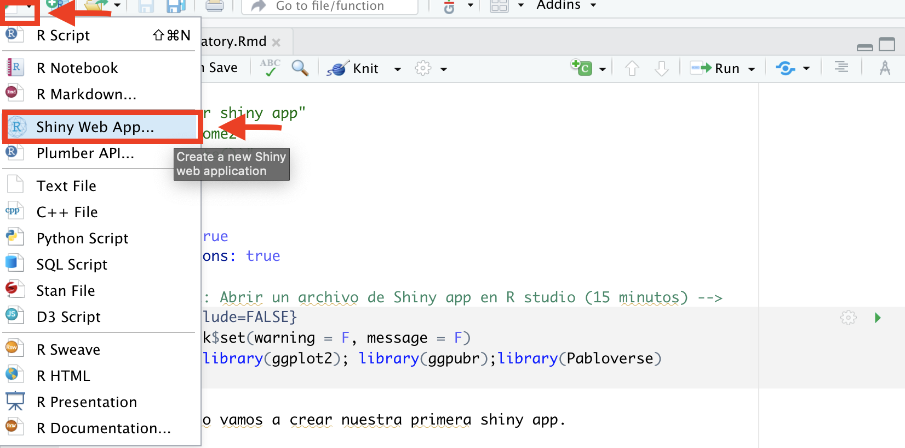
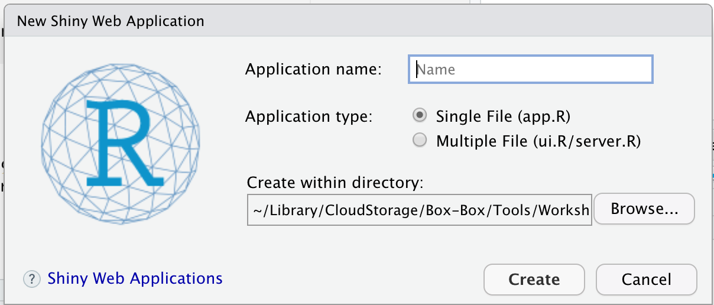
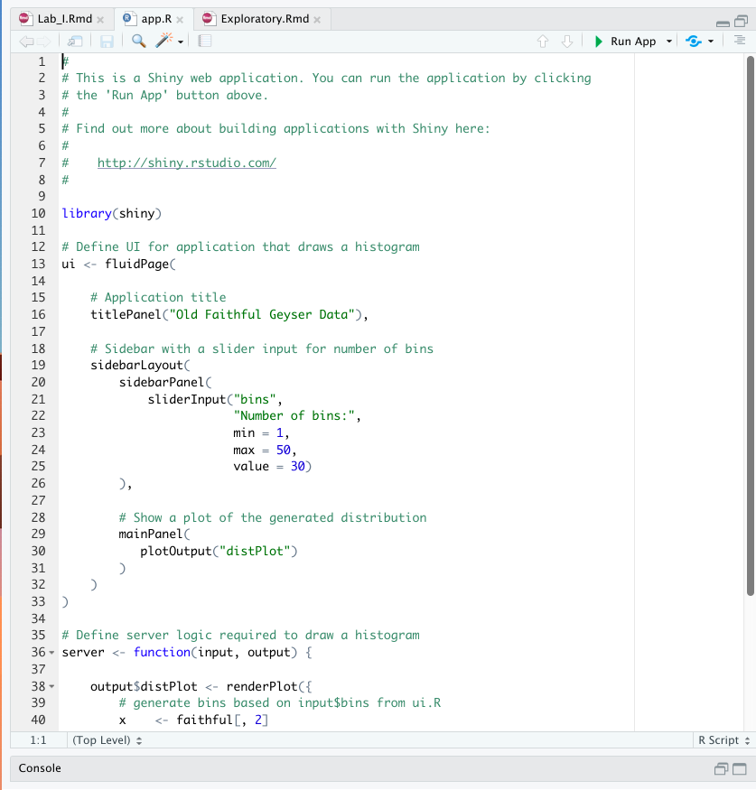
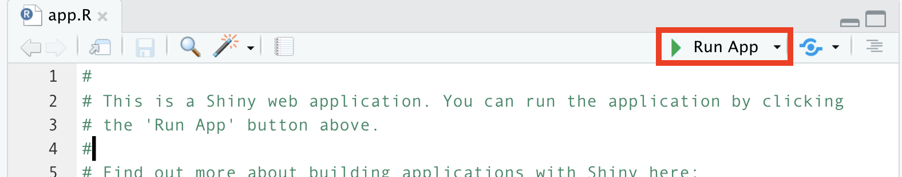

Your first App
In this exercise we will create our first shiny app.
Objectives:
- Familiarize with Rstudio and Shiny
- identify basic components of a shiny app
- How to run our app from R
1 Creating your first app
There are multiple ways to create your first app, in general the shiny apps consist of 4 parts:
- Loading the libraries, data and functions.
- User interface (UI).
- Server.
- Integrating the components
shinyApp()
First we will make sure we have the shiny library installed.
# Install shiny
install.packages("shiny")Once we have the library installed, we can start. To create your first web app, lets use the user interface of Rstudio. For this we will go to the menu for creating a new files, and select Shiny Web App… from the list

Te aparecera una ventana con las opciones para nombrar tu aplicacion, seleccionar si sera un archivo (Single file) o multiples (Multiple files) y el directorio donde la queremos guardar.
Por el momento dejaremos seleccionado que sea un achivo simple, agregamos un nombre para la aplicacion y guardamos la aplicacion en el directorio de nuestro proyecto.

Al guardar la aplicacion, veremos el archivo app.R donde se mostrara una plantilla de ejemplo con una aplicacion generica.

Examinar shiny apps puede ser un poco dificil al principio, ya que constan de varios componentes anidados y es facil perderse entre tantos parentesis, es importante comentar lo mas que puedas para facilitar a otras personas (o tu yo del futuro) entender la aplicacion para poder modificarla. Otra recomendacion para facilitar la lectura de las aplicaciones shiny es activar la opcion de Rainbow parenthesis que se encuentra en el menu de Code.

Para correr la shiny app, busca el boton de Run App en la parte superior derecha de la seccion del editor del codigo.

Mientras la aplicacion este corriendo, no podras usar la consola de R. Para terminar la aplicacion, puedes cerrar la ventana y automaticamente te regresara a Rstudio y veras que se habilita nuevamente la consola.
2 Examining the components
Toma un tiempo para examinar los contenidos de la aplicacion, esta bien si aun no entiendes todas las funciones y argumentos que se usan en esta aplicacion. Trata de indentificar los dos componentes principales (ui y server) y hacer los siguienets cambios:
- Cambia el color de las barras del histograma.
- Cambia el numero maximo de bins a 100.
- Cambia el titulo de la figura.